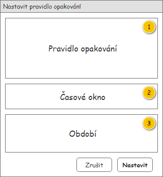
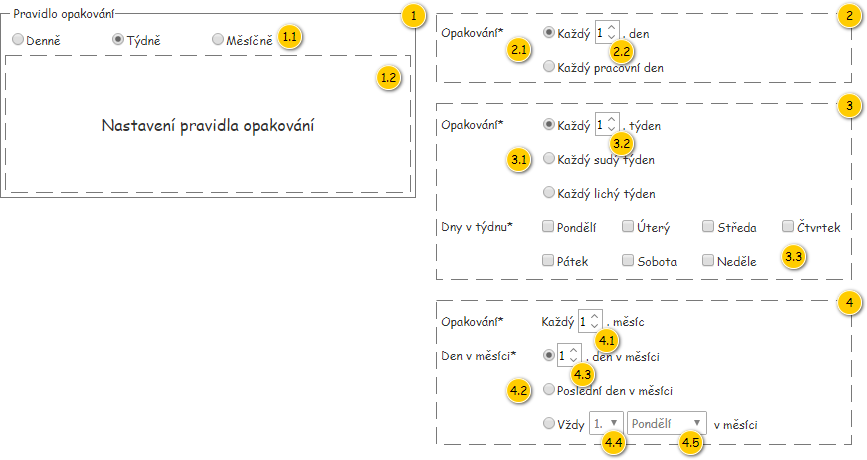
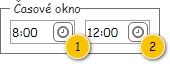
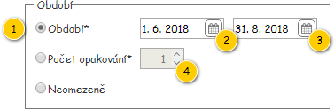
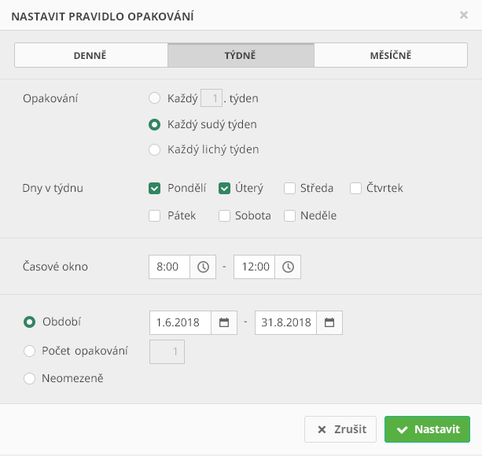

Formulář slouží k nastavení pravidlo opakování, která může být jeho vstupním parametrem.
Formulář je tvořen z ucelených skupin, které budou postupně popsány. Výchozí nastavení hodnot jednotlivých komponent prázdného formuláře je uvedeno ve sloupci Výchozí hodnota, a to v tabulkách s Přehledem UI komponent. Formulář je zobrazován v modálním okně.

| Callout | Skupina |
|---|---|
| 1 | Pravidlo opakování |
| 2 | Časové okno |
| 3 | Období |

| Callout | Komponenta | Nadpis | Typ komponenty | Příklad hodnoty | Hodnota | Výchozí hodnota | Formát | Zpřístupněná | Viditelná | Chování | Validace | Poznámka |
|---|---|---|---|---|---|---|---|---|---|---|---|---|
| 1 | Skupina Pravidlo opakování | – | – | – | – | – | – | Vždy | Vždy | – | – | – |
| 1.1 | Typ pravidla opakování | – | RadioButton | Denně | Týdně | – | Vždy | Vždy | – | – | Výčet:
| |
| 1.2 | Skupina pro nastavení pravidla opakování | – | – | – | – | – | – | Vždy | Vždy | Obsah dle vybraného typu pravidla opakování. | – | Obsahuje jednu z uvedených skupin. |
| 2 | Skupina Denně | – | – | – | – | – | – | Vždy | Pokud je vybraný Typ pravidla opakování roven hodnotě Denně. | – | – | – |
| 2.1 | Typ pravidla opakování | Opakování* | RadioButton | Každý pracovní den | Každý x. den | – | Vždy | Vždy | – | – | Výčet:
| |
| 2.2 | Četnost opakování | – | NumericUpDown | 2 | 1 | – | Pokud je vybraný Typ pravidla opakování roven hodnota Každý x. den. | Vždy | – | Větší nebo rovno 1. | – | |
| 3 | Skupina Týdně | – | – | – | – | – | – | Vždy | Pokud je vybraný Typ pravidla opakování roven hodnotě Týdně. | – | – | – |
3.1 | Typ pravidla opakování | Opakování* | RadioButton | Každý sudý týden | Každý x. týden | – | Vždy | Vždy | – | – | Výčet:
| |
| 3.2 | Četnost opakování | – | NumericUpDown | 2 | 1 | – | Pokud je vybraný Typ pravidla opakování roven hodnota Každý x. týden. | Vždy | – | Větší nebo rovno 1 a zároveň menší nebo rovno 52. | – | |
| 3.3 | Dny v týdnu | Dny v týdnu* | CheckBox | Pondělí | – | – | Vždy | Vždy | – | Musí být vybrána alespoň jedna z hodnot. | Hodnoty:
| |
| 4 | Skupina Měsíčně | – | – | – | – | – | – | Vždy | Pokud je vybraný Typ pravidla opakování roven hodnotě Měsíčně. | – | – | – |
| 4.1 | Četnost opakování | Opakování* | NumericUpDown | 2 | 1 | – | Vždy | Vždy | – | Větší nebo rovno 1 a zároveň menší nebo rovno 12. | – | |
| 4.2 | Den v měsíci | Den v měsíci* | RadioButton | Poslední den v měsíci | x. den v měsíci | – | Vždy | Vždy | – | – | Výčet:
| |
| 4.3 | Den měsíce | – | NumericUpDown | 2 | 1 | – | Pokud je vybraný Den v měsíci roven hodnotě x. den v měsíci. | Vždy | – | Větší nebo rovno 1 a zároveň menší nebo rovno 28. | – | |
| 4.4 | Týden měsíce | – | ComboBox | 2. | 1. | – | Pokud je vybraný Den v měsíci roven hodnotě Vždy x. den v měsíci. | Vždy | – | – | Hodnoty:
| |
| 4.5 | Den týdne | – | ComboBox | Středa | Pondělí | – | Pokud je vybraný Den v měsíci roven hodnotě Vždy x. den v měsíci. | Vždy | – | – | Hodnoty:
|

| Callout | Komponenta | Nadpis | Typ komponenty | Příklad hodnoty | Hodnota | Výchozí hodnota | Formát | Zpřístupněná | Viditelná | Chování | Validace | Poznámka |
|---|---|---|---|---|---|---|---|---|---|---|---|---|
| 1 | Od | Pokud je zadání časového okna povinné – hodnota vstupního parametru Zadat časové okno je rovna TRUE (viz 702UC01: Definovat pravidlo opakování):
Jinak:
| TimePicker | 8:00 | – | Čas | Vždy | Vždy | Po nastavení Od, pokud je Do rovno NULL, nebo Do < Od, se Do nastaví na Od. | Pokud je zadání časového okna povinné – hodnota vstupního parametru Zadat časové okno je rovna TRUE (viz 702UC01: Definovat pravidlo opakování):
| – | |
| 2 | Do | – | TimePicker | 16:00 | – | Čas | Vždy | Vždy | – | Pokud je Od rovno NULL:
Jinak:
Pokud je zadání časového okna povinné – hodnota vstupního parametru Zadat časové okno je rovna TRUE (viz 702UC01: Definovat pravidlo opakování):
| – |

| Callout | Komponenta | Nadpis | Typ komponenty | Příklad hodnoty | Hodnota | Výchozí hodnota | Formát | Zpřístupněná | Viditelná | Chování | Validace | Poznámka |
|---|---|---|---|---|---|---|---|---|---|---|---|---|
| 1 | Typ období | – | RadioButton | Období* | Období | – | Vždy | Vždy | – | – | Výčet:
| |
| 2 | Období od | – | DatePicker | 6. 6. 2018 | Zítřejší datum | Datum | Pokud je Typ období nastaven na Období. | Vždy | Po nastavení Období od, pokud je Období do rovno NULL, nebo Období do < Období od, se Období do nastaví na Období od. | Větší nebo rovno dnešní datum. | – | |
| 3 | Období do | – | DatePicker | 12. 6. 2018 | – Poznámka: Vyplní se jako reakce na vyplnění Období od – viz sloupec Chování. | Datum | Pokud je Typ období nastaven na Období. | Vždy | – | Větší nebo rovno Období od. | – | |
| 4 | Počet opakování | – | NumericUpDown | 15 | 1 | – | Pokud je Typ období nastaven na Počet opakování. | Vždy | – | Větší nebo rovno 1. | – |

| Odkaz | Stručný popis změny/doplnění |
|---|---|
| Časové okno | Doplněna možnost nastavení povinnosti časového okna (naznačeno modře). |